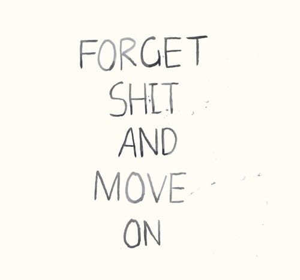

Привожу сегодня мелкого в садег, стоим у домофона, я его спрашиваю:
— Тима, говорить будешь?
— Да.
— Говори!
И он выдает: — Тима и папа.
Вошли, а там все ржут :)
Привожу сегодня мелкого в садег, стоим у домофона, я его спрашиваю:
— Тима, говорить будешь?
— Да.
— Говори!
И он выдает: — Тима и папа.
Вошли, а там все ржут :)

@via ffffound!
Все, уехал за пианино!
Зашел к Котовым. Купил билеты в Рим. Буду впитывать архитектуру)

Так мило :)
Саня прислал ссылку про даркрум в Питере! Круть!
Какие ебанутые чуваки ;) Фальк, спасибо :)

Такой малявко-малявко :)

Будет чем заняться на неделе :)
Иногда так хочется залезть на стену. По стене выше - на потолок. Поползать по потолку немного, цепляясь за провод от люстры. Потом к окну и в форточку, наружу. На гладкую скользкую стену. И ногти срывая выше еще. Через этажи, чужие окна, балконы. Еще выше. На крышу, к антенам, к сигналу со спутника. Хватать ртом воздух. Сесть, прилечь, уснуть. Под дождем.